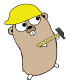

OpenReviewer
A Specialized Large Language Model for Generating Critical Scientific Paper Reviews
Exploring Peer Review Dynamics with LLM Agents
Optimizing Review Generation Through Prompt Generation
Critique Paper (Meta-)Reviewing
A Case Study on the Impact of ChatGPT on AI Conference Peer Reviews
Can a Research Agent Write Convincing but Unsound Papers that Fool LLM Reviewers?
SPOT-a Benchmark for Automated Verification of Scientific Research
The AAAI-26 AI Review Pilot
Verifying Scientific Claims
Improving scientific claim verification with weak supervision and full-document context
A Large Dataset for Evidence-based Scientific Claim Verification
Nothing matches those filters.